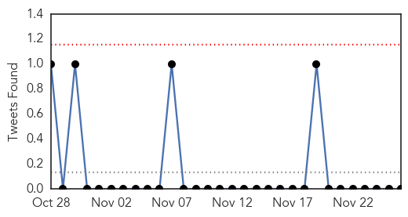
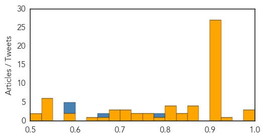

MERS
30-Day Web Trend
0 alerts, 0 warnings
30-Day Twitter Trend
0 alerts, 0 warnings

Article Locations
Article Confidences

Top Articles:
Top Tweets:
-
No tweets found for Nov 26, 2014
Unknown
30-Day Web Trend
1 alerts, 0 warnings

30-Day Twitter Trend
1 alerts, 0 warnings

Article Locations

Article Confidences
Top Articles:
- 0.996
- WHO: Plague outbreak kills 40 in Madagascar, 119 diagnosed since August
- 0.995
- Plague outbreak kills 40 people in Madagascar
- 0.995
- Plague outbreak kills 40 people in Madagascar
- 0.928
- Centers for Disease Control and Prevention: Officials Say Many With HIV Not Being Treated
- 0.923
- WHO confirms outbreak of the plague in Madagascar
- 0.917
- Chicago Tribune
- 0.917
- Chicago Tribune
- 0.917
- Chicago Tribune
- 0.917
- Chicago Tribune
- 0.917
- Chicago Tribune
- 0.917
- Chicago Tribune
- 0.917
- Chicago Tribune
- 0.917
- Chicago Tribune
- 0.917
- Chicago Tribune
- 0.917
- Chicago Tribune
- 0.917
- Chicago Tribune
- 0.917
- Chicago Tribune
- 0.917
- Chicago Tribune
- 0.917
- Chicago Tribune
- 0.917
- Chicago Tribune
- 0.917
- Chicago Tribune
- 0.917
- Chicago Tribune
- 0.917
- Chicago Tribune
- 0.917
- Chicago Tribune
- 0.917
- Chicago Tribune
- 0.917
- Chicago Tribune
- 0.917
- Chicago Tribune
- 0.917
- Chicago Tribune
- 0.917
- Chicago Tribune
- 0.917
- Chicago Tribune
- 0.901
- 68 Sickened by Salmonella Sprouts, but No Recall?
- 0.873
- Public health officials warn of Lyme-carrying ticks in Rouge Valley
- 0.866
- Russia will go on supporting Syria in countering "terrorism"
- 0.866
- Hong Kong protest leaders arrested-student Facebook accounts
- 0.854
- Typhoid claims one life in Thakkar Bapanagar
- 0.848
- Three young children from Blandford area among those affected by E coli outbreak in Dorset
- 0.845
- Region of York issues lyme disease alert
- 0.819
- HIV Therapy Delay Negatively Influences Immune Response
- 0.818
- Human antibodies produced in DNA-vaccinated cows protect in lethal models of hantavirus
- 0.813
- Sexual diseases alarming, testing encouraged
- 0.802
- Finland Considers Wild Boar Eradication to Stop Entry of African Swine Fever
- 0.785
- Northern Voices Online Most Americans with HIV positive not getting treatment for it
- 0.767
- South Sudan Crisis Update October 2014 - South Sudan
- 0.751
- Blandford E. coli 'cluster of cases' investigated
- 0.728
- Human antibodies produced in DNA-vaccinated cows protect in lethal models of hantavirus
- 0.725
- DHEC: Racoon exposes 2 people to rabies in the Upstate
- 0.725
- Finland considers drastic measures to stop entry of African swine fever pest
- 0.707
- Neighboring Jiangsu Province reports foot-and-mouth disease outbreak
- 0.702
- The Daily News of Newburyport: Local News
- 0.697
- Anti-fluoride push gains beyond Rockport, Gloucester
Showing top 50 articles...
Top Tweets:
- 0.864
- The MERS outbreak in Alkharj, KSA continues. Latest case, reported today, likely contracted virus in hospital. http://t.co/zgYfKxaYjs
- 0.797
- Hubo participación de la academia en la conversación de aseguramiento de calidad de medicamentos en las Americas
- 0.786
- @FlLOSOFIAS: No me avergüenza decir que creo en DIOS y le doy gracias por un día más de vida. ¿Cuenta de filosofía escribiendo teología?
- 0.677
- RT: Bitácoras: El Gecko de cola de hoja de Henkel es extremadamente hábil para el camuflaje. Se encuentra en Madagascar. http://t…
- 0.666
- .@ilhamabuljadaye Yes. But it seems like so many MERS patients contract the virus in hospital - maybe a critical care background will help?
- 0.589
- Taller de USP/PQM en Lima identificó potenciales mecanismos para sostener la ColaboraciónSurSur para control de calidad de medicamentos.
- 0.587
- Nuestros socios y facilitan la colaboraciónsursur hace + de 12 años con el apoyo de.
- 0.514
- Ahora hay seminarios religiosos que se toman antes de entrar a la universidad para no alejarse de su religión a través de la educación.